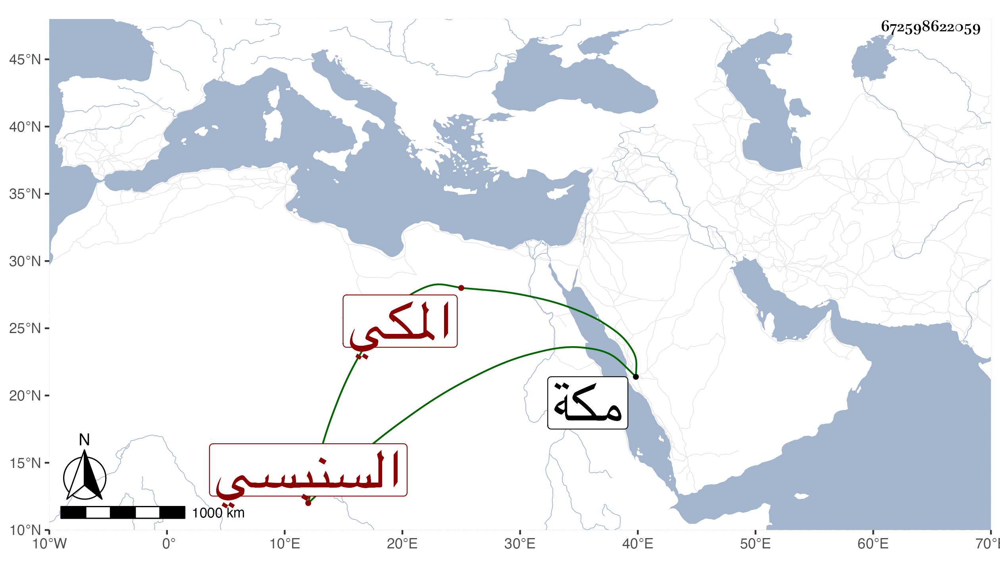

0902Sakhawi.DawLamic.ITO20230111-ara1.EIS1600.672598622059
Biography ID: 672598622059
575
عبد العزيز بن محمد بن أحمد بن جار الله بن زائد العز السنبسي المكي . حفظ العمدة فعرضها على الشهاب أحمد بن علي الحسني الفاسي في سنة عشر وأجازه بل أجاز له في سنة خمس فما بعدها العراقي والهيثمي وابن صديق والزين المراغي وعائشة ابنة ابن عبد الهادي والفرسيسي والشهاب الجوهري وخلق . مات بمكة في شعبان سنة سبع وثلاثين ، أرخه ابن فهد .
